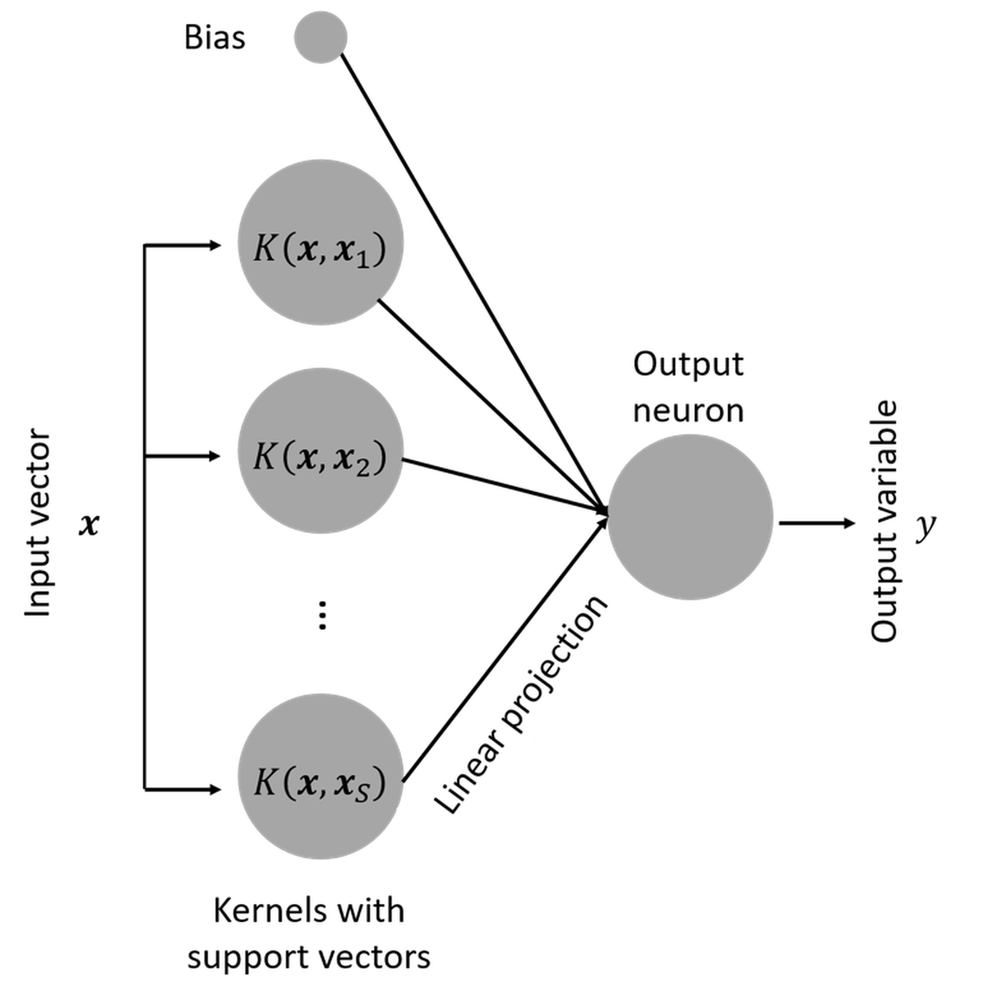

Remarks
Is SVM a more complex model?
In the preface of his seminar book194 Vapnik, V., The Nature of Statistical Learning Theory, Springer, 2000., Vladimir Vapnik wrote that “…during the last few years at different computer science conferences, I heard reiteration of the following claim: ‘Complex theories do not work, simple algorithms do’…this is not true…Nothing is more practical than a good theory….” He created the concept of VC dimension to specifically characterize his concept of the complexity of a model.
A model is often perceived to be complex. The SVM model looks more complex than the linear regression model. It asks us to characterize the margin using model parameters, write the optimization formulation, learn the trick of kernel function, and understand the support vectors and the slack variables for the nonseparable case. But, don’t forget that the reason for a model to look simple is probably only because this model may presuppose stronger conditions, too strong that we forget they are assumptions.
It is fair to say that a model is more complex if it provides more capacity to represent the statistical phenomena in the training data. In other words, a more complex model is more flexible to respond to subtle patterns in the data by adjusting itself. In this sense, SVM with kernel functions is a complex model since it can model nonlinearity in the data. But on the other hand, comparing the SVM model with other linear models as shown in Figure 134, it is hard to tell that the SVM model is simpler, but it is clear that it is more stubborn; because of its pursuit of maximum margin, it ends up with one model only. If you are looking for an example of an idea that is radical and conservative, flexible and disciplined, this is it.
Figure 134: (Left) some other linear models; (b) the SVM model

Is SVM a neural network model?
Another interesting fact about SVM is that, when it was developed, it was named “support vector network”195 Cortes, C. and Vapnik, V., Support-vector networks, Machine Learning, Volume 20, Issue 3, Pages 273–297, 1995.. In other words, it has a connection with the artificial neural network that will be discussed in Chapter 10. This is revealed in Figure 135. Readers who know neural network models are encouraged to write up the mathematical model of the SVM model following the neural network format as shown in Figure 135.
Figure 135: SVM as a neural network model
Derivation of the margin
 Figure 136: Illustration of how to derive the margin
Figure 136: Illustration of how to derive the margin
Consider any two points on the two margins, e.g., the \(\boldsymbol{x}_A\) and \(\boldsymbol{x}_B\) in Figure 136. The margin width is equal to the projection of the vector \(\overrightarrow{A B} = \boldsymbol{x}_B - \boldsymbol{x}_A\) on the direction \(\boldsymbol{w}\), which is
\[\begin{equation} \text{margin } = \frac{ (\boldsymbol{x}_B - \boldsymbol{x}_A) \cdot \vec{\boldsymbol{w}}}{\|\boldsymbol{w}\|}. \tag{81} \end{equation}\]
It is known that
\[ \boldsymbol{w}^{T} \boldsymbol{x}_B + b =1, \]
and
\[ \boldsymbol{w}^{T} \boldsymbol{x}_A + b = -1. \]
Thus, Eq. (81) is rewritten as
\[\begin{equation} \text{margin } = \frac{2}{\|\boldsymbol{w}\|}. \tag{82} \end{equation}\]
Why the nonzero \(\alpha_n\) are the support vectors
Theoretically, to understand why the nonzero \(\alpha_n\) are the support vectors, we can use the Karush–Kuhn–Tucker (KKT) conditions196 Bertsekas, D., Nonlinear Programming: 3rd Edition, Athena Scientific, 2016.. Based on the complementary slackness as one of the KKT conditions, the following equations must hold
\[ \alpha_{n}\left[y_{n}\left(\boldsymbol{w}^{T} \boldsymbol{x}_{n}+b\right)-1\right]=0 \text {, for } n=1,2, \dots, N. \]
Thus, for any data point \(\boldsymbol{x}_n\), it is either
\[ \alpha_{n} = 0 \text {, and } y_{n}\left(\boldsymbol{w}^{T} \boldsymbol{x}_{n}+b\right)-1 \neq 0; \]
or
\[ \alpha_{n} \neq 0 \text {, and } y_{n}\left(\boldsymbol{w}^{T} \boldsymbol{x}_{n}+b\right)-1 = 0. \]
Revisiting Eq. (58) or Figure 116, we know that only the support vectors have \(\alpha_{n} \neq 0\) and \(y_{n}\left(\boldsymbol{w}^{T} \boldsymbol{x}_{n}+b\right)-1 = 0\).
AdaBoost algorithm
The specifics of the AdaBoost algorithm shown in Figure 123 are described below.
Input: \(N\) data points, \(\left(\boldsymbol{x}_{1}, y_{1}\right),\left(\boldsymbol{x}_{2}, y_{2}\right), \ldots,\left(\boldsymbol{x}_{N}, y_{N}\right)\).
Initialization: Initialize equal weights for all data points \[ \boldsymbol{w}_{0}=\left(\frac{1}{N}, \ldots, \frac{1}{N}\right).\]
At iteration \(t\):
Step 1: Build model \(h_t\) on the dataset with weights \(\boldsymbol{w}_{t-1}\).
Step 2: Calculate errors using \(h_t\) \[ \epsilon_{t}=\sum_{n=1}^{N} w_{t, n}\left\{h_{t}\left(x_{n}\right) \neq y_{n}\right\}.\]
Step 3: Update weights of the data points \[ \boldsymbol{w}_{t+1, i}=\frac{w_{t, i}}{Z_{t}} \times \left\{\begin{array}{c}{e^{-\alpha_{t}} \text { if } h_{t}\left(x_{n}\right)=y_{n}} \\ {e^{\alpha_{t}} \text { if } h_{t}\left(x_{n}\right) \neq y_{n}}.\end{array} \right.\] Here, \[Z_{t} \text { is a normalization factor so that } \sum_{n=1}^{N} w_{t+1, n}=1,\] and \[ \alpha_{t}=\frac{1}{2} \ln \left(\frac{1-\epsilon_{t}}{\epsilon_{t}}\right).\]
Iterations: Repeat Step 1 to Step 3 for \(T\) times, to get \(h_1\), \(h_2\), \(h_3\), \(\ldots\), \(h_T\).
Output: \[ H(x)=\operatorname{sign}\left(\sum_{t=1}^{T} \alpha_{t} h_{t}(x)\right).\]
When all the base models are trained, the aggregation of these models in predicting on a data instance \(\boldsymbol{x}\) is a weighted sum of base models
\[ h(\boldsymbol{x})=\sum_{i} \gamma_{i} h_{i}(\boldsymbol{x}), \]
where the weight \(\gamma_{i}\) is proportional to the accuracy of \(h_{i}(x)\) on the training dataset.